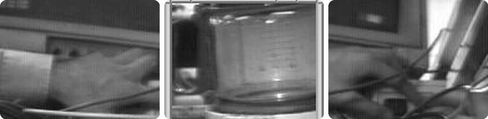
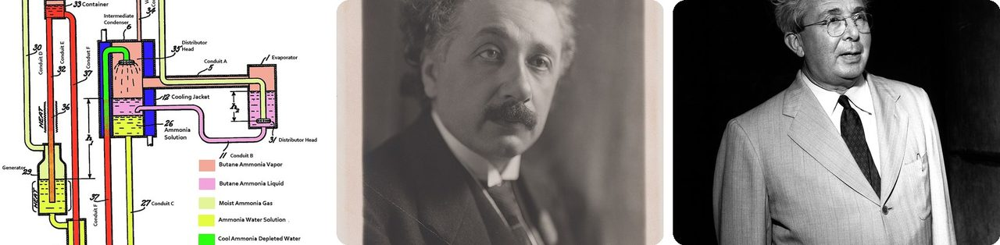

🌍 Top 10 Aparatos de la casa y sus percances más raros
18 de noviembre de 2026
1. 🇺🇸 El horno de microondas se descubrió gracias a un chocolate derretido
 En 1945, Percy Spencer, un ingeniero autodidacta de la empresa Raytheon, trabajaba junto a un radar encendido. Se dio cuenta de que el chocolate que traía en el bolsillo se había derretido.
En 1945, Percy Spencer, un ingeniero autodidacta de la empresa Raytheon, trabajaba junto a un radar encendido. Se dio cuenta de que el chocolate que traía en el bolsillo se había derretido.
Quiso saber por qué, así que apuntó microondas a la comida a propósito. Lo primero que cocinó fueron palomitas. Lo segundo fue un huevo, y le explotó en la cara a una de las personas que hacían la prueba.
El primer microondas a la venta, el Radarange de 1947, medía como 1.8 m (5 pies 11 pulgadas) de alto y pesaba 340 kg (750 libras), más o menos lo que un piano de cola. Raytheon lo seguía mejorando, así que al principio se rentaba a hoteles y restaurantes por 5 dólares al día en vez de venderse.
Es un aparato de cocina que empezó con una golosina arruinada.
2. 🇦🇺 Un microondas engañó a unos astrónomos con "señales del espacio"
 En el Observatorio de Parkes, en Australia, un radiotelescopio gigante seguía captando pulsos cortitos que se parecían mucho a las ráfagas rápidas de radio, unos destellos misteriosos que llegan del espacio profundo. Los registros viejos mostraban 46 de estas ráfagas falsas entre 1998 y 2015.
En el Observatorio de Parkes, en Australia, un radiotelescopio gigante seguía captando pulsos cortitos que se parecían mucho a las ráfagas rápidas de radio, unos destellos misteriosos que llegan del espacio profundo. Los registros viejos mostraban 46 de estas ráfagas falsas entre 1998 y 2015.
Los astrónomos les pusieron "peritones", por un venado alado inventado que proyecta la sombra de un hombre, porque parecían hechas por personas. En 2015 por fin encontraron al culpable: alguien del observatorio abría la puerta de un microondas antes de que terminara el tiempo.
Cuando la puerta se abre antes, el microondas suelta un "pío" rápido de radio al apagarse. Los dos microondas culpables tenían más de 27 años, y hacían una ráfaga falsa como la mitad de las veces que se abría la puerta antes de tiempo.
O sea, el misterio espacial era alguien con prisa por comer.
3. 🏴 La primera cámara web del mundo apuntaba a una cafetera

En 1991, en el laboratorio de computación de la Universidad de Cambridge, los investigadores estaban hartos de caminar hasta la Sala Troya y encontrar la cafetera vacía. Así que dos de ellos apuntaron una cámara hacia ella y mandaron la imagen a la computadora de todos.La imagen era chiquita, de solo 128 por 128 puntos grises, más pequeña que una estampilla en una pantalla de hoy. En 1993 la subieron a la World Wide Web, y gente de todo el mundo empezó a revisar una cafetera en Inglaterra.
La cámara se apagó en 2001, y periódicos como The Washington Post publicaron la noticia. Después, una de las cafeteras se vendió en eBay por 3,350 libras esterlinas.
En otras palabras, la gran misión de la primera cámara web era ahorrarle a la gente una vuelta en vano.
4. 🇬🇧 Los comerciales de la tele británica ponen nerviosa a la red eléctrica por las teteras
 En Gran Bretaña, cuando un programa popular se va a comerciales, millones de personas se paran al mismo tiempo a prender la tetera para el té. A esto le dicen TV pickup, y las teteras británicas son potentes: cada una usa de 2.5 a 3 kilovatios.
En Gran Bretaña, cuando un programa popular se va a comerciales, millones de personas se paran al mismo tiempo a prender la tetera para el té. A esto le dicen TV pickup, y las teteras británicas son potentes: cada una usa de 2.5 a 3 kilovatios.
Un pico normal suma de 200 a 400 megavatios de demanda de golpe. El más grande de la historia fue el 4 de julio de 1990, justo después de que Inglaterra perdiera en penales contra Alemania Occidental en el Mundial: 2,800 megavatios.
La red se prepara con tiempo. Dinorwig, una central en Gales que guarda energía como agua en un lago en lo alto de una montaña, puede mandar 1,320 megavatios en solo 12 segundos dejando que esa agua baje de golpe.
Piénsalo como todo un país jalándole al baño al mismo tiempo, pero con té.
5. 🇬🇧 Al inventor de la aspiradora lo arrestaron por aspirar plata
 En 1901, el ingeniero inglés Hubert Cecil Booth vio una máquina que soplaba el polvo de las sillas y pensó: ¿y si mejor lo aspiramos? Probó la idea poniendo un pañuelo sobre la silla de un restaurante y chupando el polvo a través de él con la boca.
En 1901, el ingeniero inglés Hubert Cecil Booth vio una máquina que soplaba el polvo de las sillas y pensó: ¿y si mejor lo aspiramos? Probó la idea poniendo un pañuelo sobre la silla de un restaurante y chupando el polvo a través de él con la boca.
Su máquina, apodada "Puffing Billy", era tan grande que iba en una carreta jalada por caballos. Los trabajadores la estacionaban afuera de un edificio y metían mangueras largas por las ventanas para limpiar adentro.
Causó algunos problemas. A Booth le llegaban quejas por el ruido y hasta lo multaron por asustar a los caballos. Después de limpiar la Real Casa de la Moneda, donde se hacen las monedas, lo arrestaron al salir porque se le olvidó vaciar una máquina llena de polvo de plata. Lo soltaron rápido.
O sea, fue un robo por accidente, con aspiradora.
6. 🇺🇸 El lavavajillas se inventó porque a alguien se le despostillaban sus platos finos
 Josephine Cochrane era parte de la alta sociedad de Chicago, y después de una de sus cenas algunos de sus platos de herencia familiar se despostillaron al lavarlos. Decidió que una máquina podía hacerlo mejor.
Josephine Cochrane era parte de la alta sociedad de Chicago, y después de una de sus cenas algunos de sus platos de herencia familiar se despostillaron al lavarlos. Decidió que una máquina podía hacerlo mejor.
Midió sus platos y construyó rejillas de alambre con la forma justa para platos, tazas y platitos. Las rejillas iban sobre una rueda dentro de una tina de cobre → un motor hacía girar la rueda → agua caliente con jabón salía disparada hacia arriba y les caía encima a los platos como lluvia. Fue el primer lavavajillas que lavaba con presión de agua en vez de cepillos.
Le dieron la patente el 28 de diciembre de 1886. En la Feria Mundial de Chicago de 1893, nueve de sus máquinas lavaban los platos en los restaurantes, y su empresa después pasó a ser parte de KitchenAid.
Es toda una máquina nueva, nomás para salvar unos platos.
7. 🇩🇪 Albert Einstein inventó un refrigerador

En los años veinte, los periódicos de Berlín contaron que una familia había muerto cuando se rompió un sello de su refrigerador y un gas tóxico se metió a su casa. Albert Einstein y su exalumno Leó Szilárd decidieron arreglar eso.Su idea: un refrigerador sin piezas que se muevan, para que no hubiera ningún sello que se desgastara. Funcionaba solo con una fuente de calor y tres líquidos: agua, amoniaco y butano. Entre 1926 y 1934 consiguieron 45 patentes en seis países.
Pero gastaba más energía que otros refrigeradores, y luego llegaron gases para enfriar más seguros. Los dos ganaron apenas 750 dólares por las patentes que vendieron, unos 10,000 dólares de hoy.
En otras palabras, uno de los científicos más grandes de la historia también intentó arreglar el refri de la cocina.
8. 🇺🇸 Una empresa de licuadoras se hizo famosa licuando celulares
 Tom Dickson, fundador de la empresa de licuadoras Blendtec, una vez licuó una caja de cerillos como experimento. Eso llevó a una serie de videos donde abría cada episodio diciendo "¿Se licuará? Esa es la cuestión."
Tom Dickson, fundador de la empresa de licuadoras Blendtec, una vez licuó una caja de cerillos como experimento. Eso llevó a una serie de videos donde abría cada episodio diciendo "¿Se licuará? Esa es la cuestión."
Licuó un iPad, un iPhone 4 y un "cochicken": medio pollo cocido con una lata de Coca-Cola, con todo y huesos (no se debe comer).
En 2007 licuó una videocámara. Después, el equipo de video intentó devolver lo que quedaba en la tienda de electrónica Best Buy. No funcionó.
Es un programa de cocina donde la receta es tu celular.
9. 🍞 Los tostadores se conectaron a internet antes que la mayoría de la gente
 En 1990, los científicos de la computación John Romkey y Simon Hackett conectaron un tostador a internet, y así fue el primer aparato que se podía controlar en línea. La mayoría de las casas todavía no tenía internet.
En 1990, los científicos de la computación John Romkey y Simon Hackett conectaron un tostador a internet, y así fue el primer aparato que se podía controlar en línea. La mayoría de las casas todavía no tenía internet.
Las ideas con tostadores se pusieron más raras. En 2001, un diseñador de la Universidad Brunel, en Inglaterra, hizo un tostador que llamaba por teléfono a un servicio del clima y quemaba el pronóstico, soleado o nublado, en tu pan.
Después, un tostador que usaba Twitter se volvió un ejemplo temprano del "internet de las cosas", la idea de que los objetos de todos los días platiquen con internet.
Piénsalo como un desayuno que revisa su correo.
10. 🇬🇧 A un despertador que prepara té le rechazaron el nombre por culpa de un río
 Una teasmade es un despertador de buró que además prepara té, para que tengas una taza caliente lista en cuanto despiertas. En 1902, un armero de Birmingham llamado Frank Clarke patentó uno y lo vendió como "¡Un reloj que hace té!".
Una teasmade es un despertador de buró que además prepara té, para que tengas una taza caliente lista en cuanto despiertas. En 1902, un armero de Birmingham llamado Frank Clarke patentó uno y lo vendió como "¡Un reloj que hace té!".
En 1932, George Absolom inventó uno eléctrico y quiso registrar el nombre "Teesmade". La oficina de patentes dijo que no, porque no se fabricaba a orillas del río Tees, y el nombre podía confundir a la gente.
Después, la Goblin Teasmade, vendida por la misma empresa que salió del negocio de aspiradoras de Booth, fue un éxito. Las teasmade estuvieron en su mejor momento en los años sesenta y setenta, y una hasta despierta a Brian May en el video de "I Want to Break Free" de Queen.
Es un despertador que te soborna con té para que te levantes.
Dato curioso
La cafetera de la Sala Troya inspiró una broma que todavía está escondida dentro de internet. El Día de los Inocentes en inglés, el 1 de abril de 1998, un grupo serio que define los estándares de internet publicó reglas para controlar cafeteras en línea, incluido el código de error 418: "Soy una tetera". Cuando en 2017 unos encargados intentaron quitarlo de programas muy usados, un chavo de 15 años empezó la campaña "Salvemos el 418" y ganó. Y eso hace pensar qué otras bromas del 1 de abril terminaron volviéndose reales.
Créditos de las fotos (Wikimedia Commons)
- #1: Raytheon RadaRange NS Savannah MD1.jpg by Acroterion, CC BY-SA 4.0
- #1: Amana Radarange Microwave Oven.jpg by TaurusEmerald, CC BY-SA 4.0
- #1: Tappan Model RL-1 Microwave Oven (smithsonian_american_history_museum) by Raytheon Manufacturing Co. and Tappan, CC0
- #2: CSIRO Parkes Radio Telescope (flickr) by amandabhslater, CC BY-SA 2.0
- #2: CSIRO ScienceImage 4350 CSIROs Parkes Radio Telescope with moon in the background.jpg by division, CSIRO, CC BY 3.0
- #2: CSIRO Parkes Radio Telescope (flickr) by amandabhslater, CC BY-SA 2.0
- #3: Trojan Room Coffee Pot (x1.jpg).jpg by Daniel Gordon, Martyn Johnson and Quentin Stafford-Fraser, CC BY-SA 3.0
- #3: Trojan Room coffee pot xcoffee.png by Quentin Stafford-Fraser, CC BY-SA 3.0
- #3: Trojan Room coffee pot xvcoffee.jpeg by Daniel Gordon, Martyn Johnson and Quentin Stafford-Fraser, CC BY-SA 3.0
- #4: Electric kettle phillips white.JPG by Rafa, Public domain
- #4: Dinorwig pumped hydro Power Station at Slate Quarry near Llanberis (flickr) by John Englart (Takver), CC BY-SA 2.0
- #4: General electric - electric water kettle.jpg by Cantons-de-l'Est, CC BY-SA 4.0
- #5: Hubert Cecil Booth Straßenstaubsauger von 1901.jpg by Unknown authorUnknown author, Public domain
- #5: Booth's vacuum cleaner, Science Museum, London.jpg by Matt Brown, CC BY 2.0
- #5: Antique vacuum cleaner and woodstove (flickr) by quinet, CC BY 2.0
- #6: Stamps of Romania, 2013-34.jpg by Post of Romania, Public domain
- #6: Dishwasher demonstration 1921.jpg by Unknown authorUnknown author, Public domain
- #6: Lincoln buff set - 1864.jpg by Detweiler, Susan G. (1975). American Presidential China. Washington, D.C.: Smithsonian Institution, p. 46., Public domain
- #7: Einstein Refrigerator pat1781541 clarified.jpg by Einstein/Szilard with annotations by P. Brandon Malloy, Public domain
- #7: Albert Einstein 1921 (cropped).jpg by Harris & Ewing Studio, active 1905 - 1977, CC0
- #7: Leo Szilard.jpg by U.S. Department of Energy, Public domain
- #8: Blendtec Total Blender.jpg by Trebz, CC BY 2.0
- #8: Tom Dickson.jpg by Andrew Baron from NYC, United States, CC BY 2.0
- #8: Will Scoble Blend? No! (flickr) by Robert Scoble, CC BY 2.0
- #9: The Internet Toaster (flickr) by public.resource.org, CC0
- #9: Internet Toaster (flickr) by public.resource.org, CC BY 2.0
- #9: 20200721-FlickrFriday Polished Vintage Toaster (flickr) by C E Andersen, CC BY 2.0
- #10: Early Teasmade - Science Museum London (flickr) by Haydn Blackey, CC BY-SA 2.0
- #10: GoblinTeasmade.jpg by MortimerCat, CC BY-SA 3.0
- #10: Teasmade (flickr) by Simon Harriyott, CC BY 2.0


.jpg){kind=link}


.jpg){kind=link}